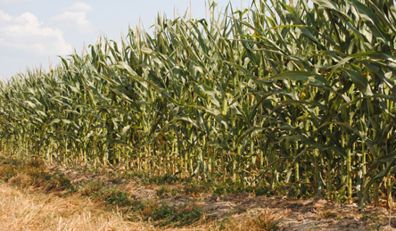

Drought and Weather Information

Cover Crops Reduce Crop Loss During Drought
Sustainable Corn CAP team members at Purdue University have shown that cover crops can increase crop yields in dry years...
State Extension Drought Resources
Illinois
http://web.extension.illinois.edu/drought/
Indiana
https://ag.purdue.edu/extension/eden/Pages/drought.aspx
Iowa
http://www.extension.iastate.edu/topic/recovering-disasters
Michigan
http://msue.anr.msu.edu/resources/drought_resources
Minnesota
http://www.extension.umn.edu/extreme-weather/drought-fire/
Missouri
http://extension.missouri.edu/main/DisplayCategory.aspx?C=257
Ohio
http://agnr.osu.edu/managing-drought-2012
South Dakota
http://igrow.org/agronomy/drought/
Wisconsin
http://fyi.uwex.edu/drought2012/
Weather and Climate Condition Maps and Decision Support Resources
This link will take you to the Drought Research Initiative Network and U2U "Decision Support Resources" page.
https://drinet.hubzero.org/u2utools